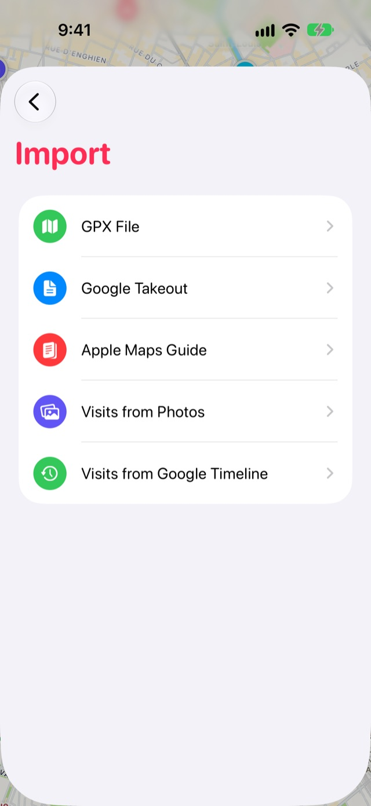
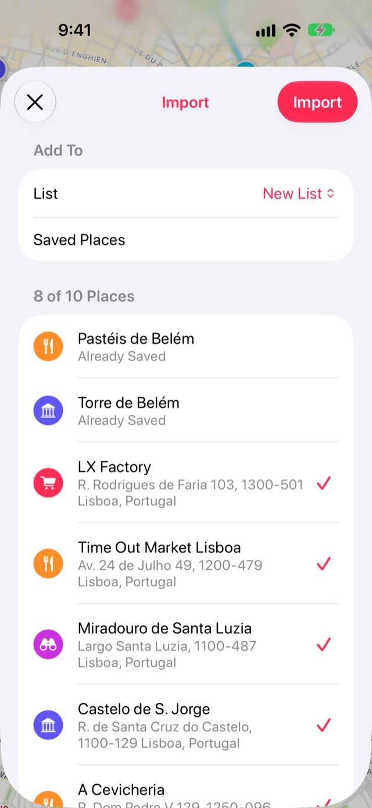

So importierst du deine gespeicherten Orte aus Google Maps in Stops
Google Maps hat keine Export-Taste für deine gespeicherten Orte, aber Google Takeout kann dir eine Kopie davon als Datei geben. Stops liest diese Datei und behält von jedem Ort Name, Adresse, Notiz und das Datum, an dem du ihn gespeichert hast.
- Kostenlos
- Etwa 10 Minuten
- iPhone und iPad
Was du brauchst
- Das Google-Konto, das du in Google Maps verwendest.
- Stops auf deinem iPhone oder iPad.
Schritt für Schritt
-
Fordere deine Orte bei Google Takeout an
Gehe zu takeout.google.com und melde dich an. Wähle Auswahl aufheben und setze dann nur bei Maps (Meine Orte) ein Häkchen. Lass das Format auf JSON.
Wähle nicht die separaten Einträge Maps oder Gespeichert: Sie enthalten andere Dinge, und die gespeicherten Listen kommen ohne Positionen.
-
Export erstellen
Wähle Nächster Schritt, behalte Einmal exportieren und wähle Export erstellen. Google schickt dir einen Download-Link per E-Mail, meist innerhalb weniger Minuten.
-
Sichere die Datei auf deinem iPhone
Lade die ZIP-Datei aus Googles E-Mail und öffne sie in der App „Dateien“, um sie zu entpacken. In Takeout › Maps (Meine Orte) findest du Saved Places.json. Der Name richtet sich nach deiner Google-Sprache, auf Deutsch heißt die Datei zum Beispiel Gespeicherte Orte.json.
Wenn du in Google Maps Labels verwendest, gibt es vielleicht auch Labeled places.json. Stops liest auch diese Datei.
-
Öffne „Importieren“ in Stops
Öffne Journal über die Buch-Taste am Ende der Tableiste und tippe auf das Zahnrad für die Einstellungen. Wähle Importieren, dann Google Takeout, und wähle Saved Places.json.

-
Orte prüfen und importieren
Stops zeigt jeden gefundenen Ort, bevor etwas gesichert wird. Entferne das Häkchen bei allen, die du nicht willst. Orte, die du schon hast, sind als Bereits gesichert markiert und werden ausgelassen.
Behalte unter Hinzufügen zu die Option Neue Liste, um sie in eine eigene Liste zu legen, oder wähle eine deiner Listen. Tippe dann auf Importieren.

Gut zu wissen
- Neuere Takeout-Dateien lassen oft weg, wo ein Ort liegt. Stops findet ihn dann in Apple Karten anhand von Name und Adresse, was bei einer langen Datei einen Moment dauert.
- Stops gibt jedem Ort eine Kategorie, wenn es sie erkennen kann – eine Bäckerei kommt also als Essen an, ein Strand als Strand.
- Der Import ist kostenlos, und nichts verlässt dein Gerät außer den Abfragen bei Apple Karten.
Weitere Anleitungen
Stops laden
Sichere die Orte, zu denen du zurückkehrst – auf iPhone, iPad, Mac und Apple Watch.